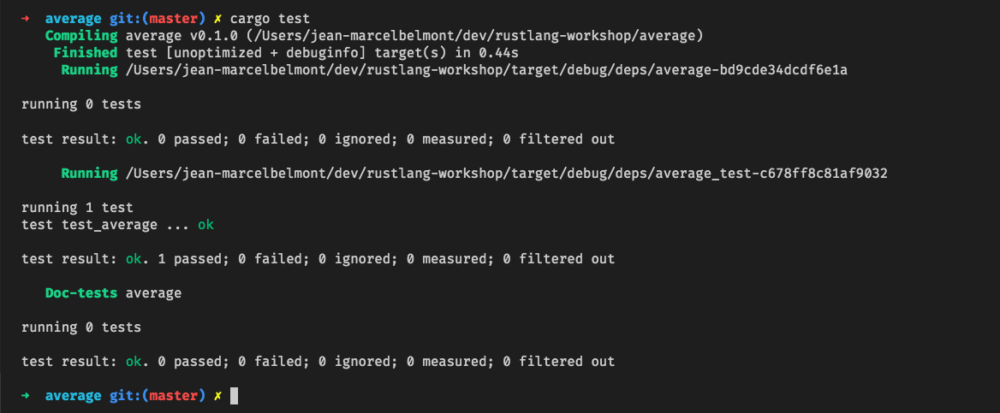
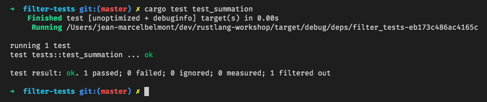

Rust Workshop - Testing
Sections:
- Software Testing Concept
- Unit Tests
- Integration Tests
- Documentation Tests
- Showing Test Output
- Filtering Tests by Name
- Ignoring Tests
- Miscellaneous Testing Topics
- How to Find Me
- Bread Crumb Navigation
Software Testing Concept
Testing can help uncover possible bugs  in your source code but will not necessarily prove correctness in your code.
in your source code but will not necessarily prove correctness in your code.
There are many types of testing that you can do and I wrote a workshop on it that you can explore here
Unit Tests
A unit tests will generally tests a unit of code such as a function or a series of functions.
Unit tests are usually automated tests that test a unit of work such that it is behaving as intended.
Testing is integrated in Rust so we can use easily unit test our source code.
Unit tests in Rust are usually Rust functions that test the behavior of the code.
We have been making assertions of our source code throughout the workshop but have not formally talked about testing up until now.
When you are writing unit tests in Rust you will typically place them in a module called tests and use the following attributes:
In your unit tests you will usually make function/method calls for the unit under test.
You can use the following macros that exist in the Rust Standard Library for your unit tests:
-
- Asserts that a boolean expression is true at runtime.
-
- Asserts that two expressions are equal to each other.
-
- Asserts that two expressions are not equal to each other.
If a particular unit test fails then you will receive a runtime panic.
Unit Test Example
Let us look at a Unit Test example to further solidify the concept:
#[allow(dead_code)]
fn average(numbers: Vec<i32>) -> f32 {
let mut sum: i32 = 0;
for n in numbers.iter() {
sum += n;
}
(sum / numbers.len() as i32) as f32
}
#[cfg(test)]
mod tests {
use super::average;
#[test]
fn test_average() {
let actual = average(vec![1, 2, 3, 4, 5]);
assert_eq!(actual, 3.0);
}
}
...........................................................................
running 1 test
test tests::test_average ... ok
test result: ok. 1 passed; 0 failed; 0 ignored; 0 measured; 0 filtered out
running 0 tests
test result: ok. 0 passed; 0 failed; 0 ignored; 0 measured; 0 filtered out
Integration Tests
An integration tests is typically used to test a group of functionality and you will typically write an integration test after a unit test, although this is not a hard and fast either.
Additionally integration tests help test your public api and wouldn't test any private code you have.
An integration test will test that your code works correctly as a cohesive unit.
One thing of note is that you cannot group your integration tests in the same location as your unit tests.
The cargo package manager in Rust expects that your integration tests live in a folder called tests that is next to your src directory.
Let us say that our average function lived in average/src/lib.rs in a crate called average like this:
fn average(numbers: Vec<i32>) -> f32 {
let mut sum: i32 = 0;
for n in numbers.iter() {
sum += n;
}
(sum / numbers.len() as i32) as f32
}
We will place our integration tests in a folder called tests next to the src folder inside of the average crate.
Our integration test for the average public api would look like this:
extern crate average;
#[test]
fn test_average() {
let actual = average::average(vec![5, 6, 7, 8, 9, 10]);
assert_eq!(actual, 7.0);
}
Notice here that we explicitly declare extern crate average since our integration test does not about this function.

Admittedly this is not a very useful integration tests, this is mainly to demonstrate how you would setup and run an integration test.
A more useful example of an integration test could be testing a restful api endpoint.
Using your integration test you could test that the route handler function is called and that any service functions related to this route are called.
So in this way you can test the behavior of groups of functions/methods by utilizing integration tests in Rust.
Documentation Tests
Rust provides an additional type of test called Documentation Tests.
In rust, the primary way of documenting a rust code base is through documentation comments.
You can also execute documentation tests using cargo test command.
Let us write a documentation test for our average function:
/// This function computes an average for a
// vector of i32 data types.
///
/// # Examples
///
/// ```rust
/// let result = average::average(vec![1,2,3,4,5]);
/// assert_eq!(result, 3.0);
///
[allow(dead_code)]
pub fn average(numbers: Vec

Notice here that our `cargo test` run included line `Doc-tests` now.
We can also confirm that the document tests are running by making the doc test fail:
If we change our assertion to `assert_eq!(result, 4.0);`.
document test fail:

The main goal around documentation tests is to provide examples that show the behavior of the code.
Rust strives to allow examples from documents to perform as complete code snippets.
Please read more this in the [api guidelines book](https://rust-lang.github.io/api-guidelines/documentation.html#examples-use--not-try-not-unwrap-c-question-mark)
## Showing Test Output
The default behavior for the Rest test library is to captur anything that is printed to standard output.
This means that you won't be able to print any output to the screen unless your test fails.
We can utilize a command line argument to disable this behavior like this:
```bash
cargo test -- --nocapture
So if we updated our integration test example like this:
#[test]
fn test_average() {
let actual = average::average(vec![5, 6, 7, 8, 9, 10]);
println!("actual is {}", actual);
assert_eq!(actual, 7.0);
}
By using the --nocapture flag we would be able to see standard output in the screen:

Filtering Tests by Name
By Default when you run cargo test it will run any tests that it sees.
In order to filter out and run a single test you can pass the name of the unit test to run.
Let us say that we have the following crate called filter-tests:
#[allow(dead_code)]
fn average(numbers: Vec<i32>) -> f32 {
let mut sum: i32 = 0;
for n in numbers.iter() {
sum += n;
}
(sum / numbers.len() as i32) as f32
}
#[allow(dead_code)]
fn summation(numbers: Vec<i32>) -> i32 {
let mut sum: i32 = 0;
for n in numbers.iter() {
sum += n;
}
sum
}
#[cfg(test)]
mod tests {
use super::*;
#[test]
fn test_average() {
let actual = average(vec![5, 6, 7, 8, 9, 10]);
assert_eq!(actual, 7.0);
}
#[test]
fn test_summation() {
let actual = summation(vec![1, 2, 3, 4, 5]);
assert_eq!(actual, 15);
}
}
Notice that here we have 2 unit tests, one that tests the average function and another that tests the summation function.
If we wanted to just run the test_summation unit test we could do the following:
cargo test test_summation

Ignoring Tests
You can also ignore tests by using the #[ignore] attribute

Notice that cargo reported that a test was ignored in yellow
Miscellaneous Testing Topics
There is a multitude of testing subjects besides what I have covered here.
One great resource for general software testing is Martin Fowlers Testing Guide
You won't find any rust specific code whereas testing guidelines and concepts that can apply to any programming language.
Mocks and Stubs
I don't have any specific advice on Mocks and Stubs to show as I still figuring it out.
One idea I have read through reddit posts is to use trait objects to facilitate generating test stubs with Rust.
Test Fixtures
You can read this article on test fixtures
Property Based Testing
I actually wrote a little bit about Property based testing in the Papers We Love RDU Chapter that you can check out Here
Please checkout this Wikipedia Link for more information
TDD
I would suggest reading Kent Becks book on Test-Driven Development for the best insight which you can find on amazon here
I also did my humble attempt on explaining TDD on my software testing workshop
The examples are written in JavaScript but the one idea is the same.
BDD
The cucumber documentation has one of the best overall explanation about Behavior-Driven Development (BDD) IMHO.
How to Find me
If you like this free book on Rust then please consider following me on the following social media outlets:
Twitter & Github Account
Please follow me at jbelmont @ github and jbelmont80 @ twitter
Bread Crumb Navigation
| Previous | Next |
|---|---|
| ← Lifetimes | README → |